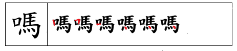
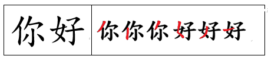
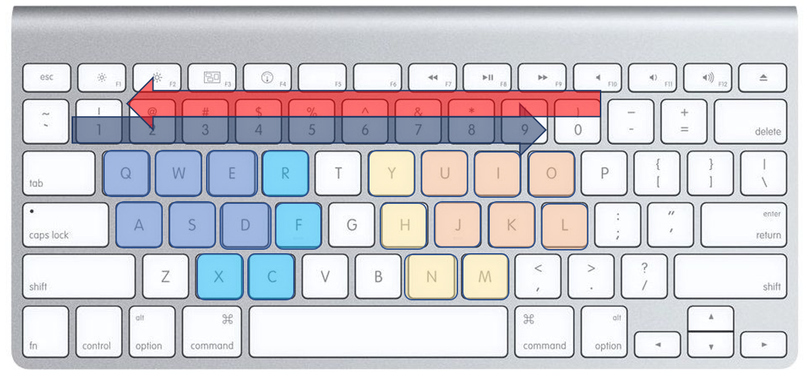

There are three coding rules implemented in G6 Chinese Input Method:
1. For single Chinese character with number of strokes less than or equals to six, full strokes coding rules with correct hand-written stroke order is used to encode the character, which is identical with those common stroke-based Chinese Input Method.

2. For single Chinese character with number of strokes greater than six, "3 + 3" character coding rule is applied to encode the character. The former '3' represents the first three strokes of the character, indicating its first radical. The latter '3' represents the last three strokes of the character for further differentiation.

3. For multiple Chinese characters, "3 + 3" phrase coding rule is applied to encode the character. The former '3' represents the first three strokes of the first character in the phrase, while the latter '3' represents the first three strokes of the last character in the phrase.
| Functions/Features | Quick Access Key | Descriptions |
|---|---|---|
| Chinese Language Input | Enable for Chinese Input. Disable for English Input |
|
| G6 Character Input | Y / R | Enable for Chinese Input in G6 Coding Stroke Order. Disable for Full Stroke Order. |
| G6 2-characer Phrase Input | H / F | Enable for 2-character Phrase Input in G6 Coding Stroke Order |
| G6 3-characer Phrase Input | N / C | Enable for 3-character Phrase Input in G6 Coding Stroke Order |
| G6 M-characer Phrase Input | M / X | Enable for M-character Phrase Input in G6 Coding Stroke Order |
| Punctuation Input | P | Enable for Chinese Punctuation Input |
| Simplified Chinese Input | Enable for Simplified Chinese Input | |
| UIOJKL Keyboard | Enable for UIOJKL Keyboard for Chinese Strokes | |
| JKLUIO Keyboard | Enable for JKLUIO Keyboard for Chinese Strokes | |
| Single Hand Configuration | Use Number 0, 9 to 2 as Candidate Index for Selection | |
| Single Left-hand Configuration | Enable for QWEASD (or ASDQWE) Keyboard for Chinese Strokes | |
| Word Prediction | Guess the Next Character for Selected Input | |
| Adaptive Ranking | Sort Candidate List by Frequency in Descending Order |
The following figure show the keyboard assignment for Left-hand typists abd Right-hand typists through above configurations:
